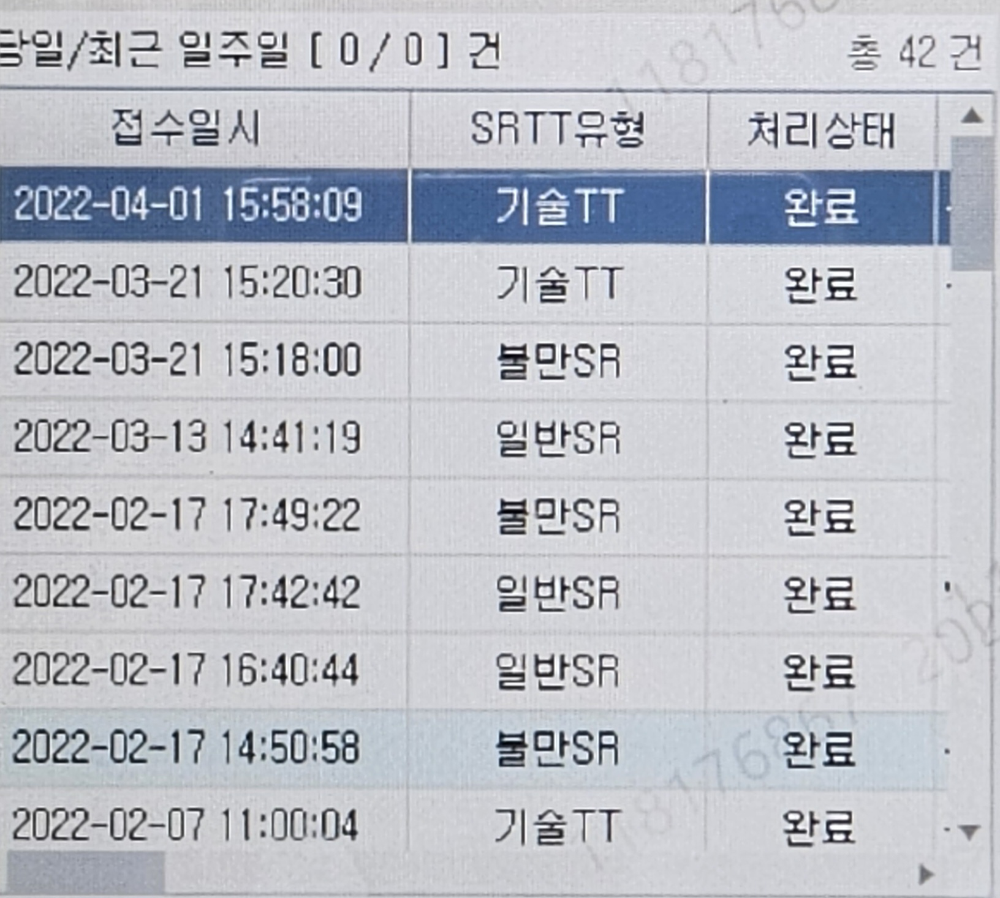

휴일 /당직 통화품질 이관 프로세스
●근무시간 :(토)10시~19시,(일)09~16시_1명 /11~19시_1명
●근무인원 : 토요일 근무시 1명 / 일요일 근무시 2명
●식사 : 토요일(13~14시) /일요일(12~13시 / 13~14시)
(중식시간 처리지연,시간 지연 양해필요)
■이관 범위 및 주의사항
※잘 모르겠으면 무조건 전대창을 이용해 당직자 문의
잘 만 물어봐도 휴근 고민 끝~! 개인 대화 창 보단 전체 대화 창으로 (담당자 확인 및 답변 지연 누락 가능성 ↑)
※이것만은 꼭 지켜주세요 (모르시면 담당자에게 물어보시면 됩니다.)
▶당직자 OB 요청 건 / 현장 엔지니어 내방 요청건(TT업무)구분 必 →구분 실패 시 업무 처리 누락발생
ㅇOB요청 건 : (불만SR /업무협조>센터간 호전환/메모전달>무선고객센터)
ㅇTT발행 건 : (기술TT /고객의 증상에 따라 SR항목 문의후 발행)
OB요청 & TT발행 모두 UCB0041 (서울중앙 통화품질팀)으로 이관 통일해주세요 #기존에서 변경
이관 후 "이관완료" 대화창에 올려주시면 좋습니다.
▶현재 증상 발생 및 진행 중인 고객은 무조건 전원리셋 까지 직접 확인 후 이관 必
(이미 해봤다는 고객의 말은 최소한 주말,당직 타임만은 믿지 마세요 ^^;)
▶기본적으로 비상 연락처 탐색 必 (비상연락처는 없지만 고객과 통화 가능한 케이스는 이관 가능)
ex.고객 : 전화 수신이 안됩니다 ㅠㅠ -> 컨설:네 전문부서 연락 요청 건으로 접수하겠습니다.
통품 당직자 : 저......고객이 전화를 안받는데 비상연락처는?????
딱 아래 적인 내용만 탐색~! 어려우시면
휴근,당직 통화품질 업무 Guide페이지 순서대로 읽고 작성~!
①음성 VOC(수발신 불가,음질불량) (번호정지 여부 확인)
☞언제부터 발생중인가요? /현재도 이용이 전혀 안되시나요?
②메시지 VOC (번호 정지여부,SMS문자서비스 기존제공 가입누락 여부, 일 500건 차단 여부)
☞받고 보내는 게 모두 안됩니까? 정도 문의하면 특정번호 수신불가등 구체적인 증상은 고객이 답변 하는 경우가 많음
③무선데이터 접속불가,속도지연 (번호 정지여부,QOS,wifi활성화 상태여부)
☞불필요한 탐색 보단 당황하지 말고 당직자에게 전대창을 이용해 문의~!언제부터 발생중인가요?
접속은 되는데 느린가요? 아니면 전혀 이용이 안되는 상황이신가요?
④유심이동 불가 및 부가서비스 이용불가
(유심이동성 결과 먼저 확인)
☞불필요한 탐색 보단 당황하지 말고 당직자에게 전대창을 이용해 문의~!

TT란 ? (Trouble Ticket)
:컨설턴트와 상담만으론 해결이 안 되는 현장 엔니어 내방을 요청하는 프로세스
(즉 기사분 보내드리는 접수)
■TT발행 범위 (엔지니어가 현장 방문 필요 시 접수)
-특정지역에서만 통화품질이 불량할때
-특정지역에서만 데이터 접속상태가 불량할때
-지역무관하게 간헐적으로 발생되나 엔지니어 내방을 통한 테스트 요청시 등
(지역무관건으로 접수시엔 당직자 협의 必)
↖
■TT발행 시 주의사항 (주소는 무조건 정확하게 / 반드시 지번 주소로)
-통화품질 관련 불만SR이력 다수 발생시엔 당직 팀장님과 당직자간 협의 필요
(통품 당직자 1인 체계여서 장콜로 이어지는 경우 이후 이관업무 마비 발생)
-동일 주소지 3개월 이내 건 혹은 동일 주소지 기술TT 이력 다수 확인 시엔
이관 전 당직자와 협의 必
※코로나 탐색은 더 이상 진행하지 않습니다~!!!!!!